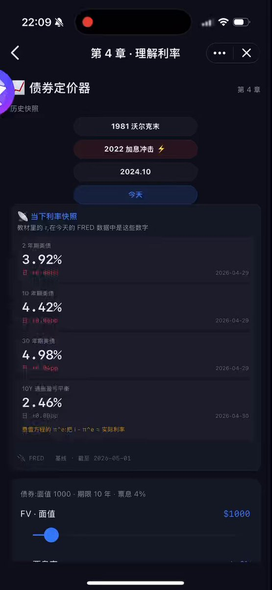
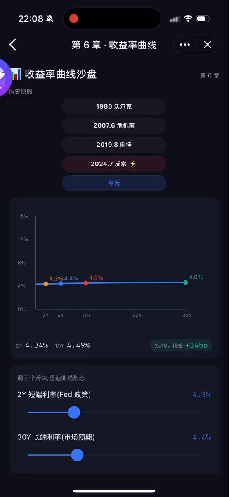
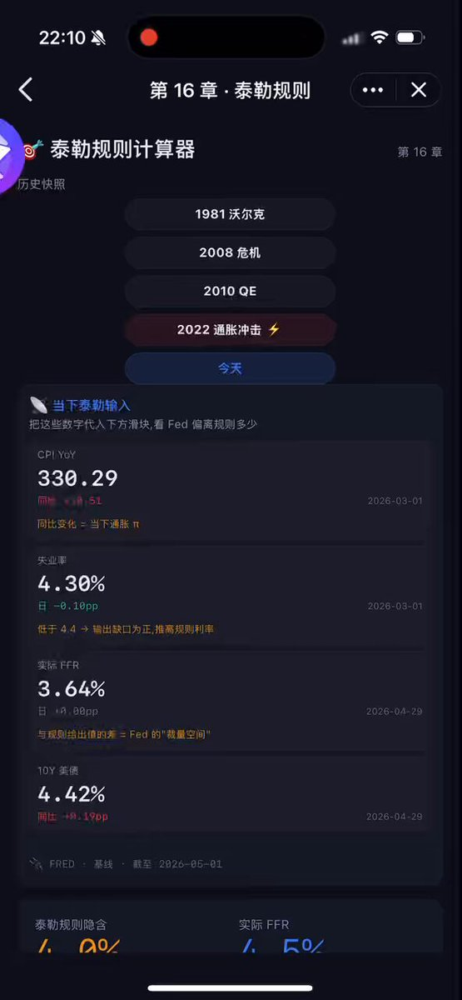
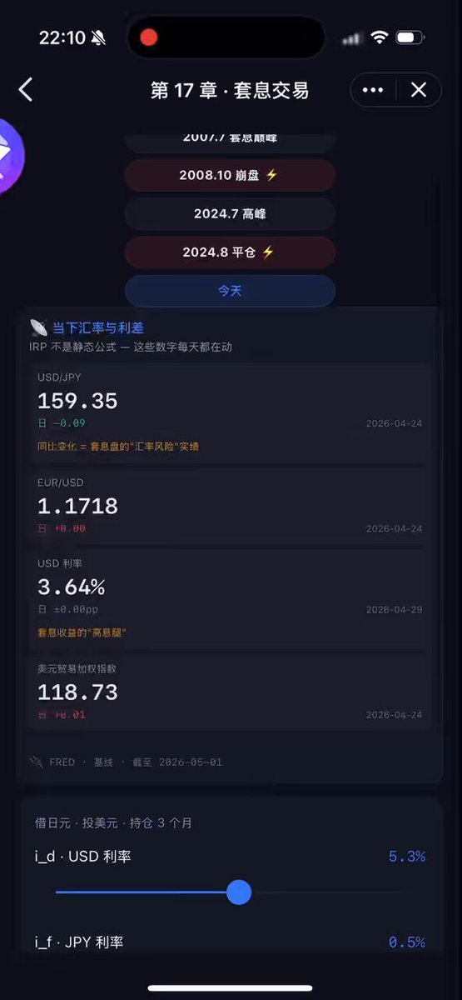

重新定义读书——我用 Claude Code + Luffa,把一本 800 页的金融学教材变成了能"动手玩"的小程序
▎ 起因:厚厚一本书,合上就忘?
从2023年我开始, 我就在看米什金的《货币金融学》(第十一版, 现在已经是第十三版),那本被叫做"金融学圣经"的厚书。毫不夸张的说, 第一遍看了整整一年, 到现在为止, 我已经反复读过4遍了.早期follow我的朋友应该都知道, 这本书我推荐过很多很多次, 是我从小白开始学金融的启蒙读物, 我还单独开过5期读书直播课专门和大家一起复习这本书.
但刚开始读的时候真的煎熬啊, 读到第三章我就想放弃了。货币乘数、国际收支账户、泰勒公式、IS-LM……每一页都是公式,每一页都是"假设其他条件不变"。
然而, 当我合上书去翻新闻 ,到处都是“反直觉”— 美债收益率倒挂 24 个月也没衰退、SVB 一夜归零美股还能创新高……
教材里的世界和外面的世界,像是两个平行宇宙。
我突然意识到,问题不在我笨,也不在书烂 — 问题在"读教材"这种学习方式本身。它是单向的、静态的、与现实脱节的。这也是很多人吐槽“学院派”的核心论据.
它告诉你 1973 年发生过什么,但不会告诉你 2024 年正在发生什么。它给你一个公式,但不让你拨动其中任何一个旋钮看看会怎样。
所以我做了一件有意思的事 — 用 AI 写了一个互动学习小程序,把这本书互动化了。
▎ 它长什么样:6 篇 25 章,每一章都能"玩"
它叫 「货币金融学互动学习」,跑在 Luffa SuperBox 上(类似微信的小程序)。
包含以下几个模块:
学习地图 — 不需要按教材顺序读。我把 25 章按"思维模块"重组成 9 条路径:30 分钟入门、利率第六感、银行倒下记、Fed 工具箱、汇率物理定律、IS-LM 全景、通胀拆解、危机时间线、反预期速通。每条 3-6 章,你不必从第 1 页啃到第 800 页, 可以挑选自己感兴趣或者正遇到的难题去解读。
反预期精选 — 25 章的精华震撼时刻。每章一句"教材没说但市场会教你的瞬间",专门解读那些市场反应与教科书理论相悖的瞬间——这是我认为单纯通过读书理解现实最大的障碍, 必须要在每一个你无法通过教科书去解释市场的时刻去回溯问题的所在、逻辑的所在。
跨章测验 — 125 道精选题,4 个题型层级:回忆 / 应用 / 分析 / 综合。可以单章精练,可以按篇抽题,可以全章随机。每道题都有完整解析。学霸可挑战.
词汇附录 — 50+ 核心术语,中英对照,附"反预期一句话定义"。点哪个词都能直接跳到对应章节。
每日财经 Top 10 — 把当下最热的财经新闻和涉及的米什金理论实时打通。读完这条新闻,知道它对应哪几章、为什么相关。
学习仪表板 — 自动追踪你看了多少章、连续学习几天,基于艾宾浩斯遗忘曲线给你推送复习提醒。
真实数据接入 — Fed 利率、CPI、M2、汇率每天从 FRED 自动同步。你打开第 16 章看泰勒规则,直接用今天的 CPI 值算给你看。教材里假设的 r,在你眼前是个活的数字。
▎ 真正的高潮:理论 vs 现实的"震撼时刻"
这是我最酷的部分。每一章我都挑了一个"现实把教材打脸"的瞬间,做成可拨弄的模拟器。举几个例子:
第 4 章 · 利率与债券
教材说债券是"低风险资产"。
2022 年长期国债 ETF(TLT)跌 -31%,比股市还惨。
打开这一章,你拨一拨"久期"和"利率冲击"两个滑块,亲眼看到价格曲线砸下去 — 17.5 久期 × 2.5% 利率涨幅 ≈ 31% 跌幅。这不是黑天鹅,这是数学。

第 6 章 · 收益率曲线
教材说曲线倒挂 → 衰退,过去 50 年屡试不爽。
2024 年:倒挂持续 24 个月,没衰退。50 年来第一次。
我让你在历史时间线里左右滑,看着这个"教科书原理"在你眼前破灭。

第 11 章 · 银行监管
教材说 Basel III 让银行"安全合规"。
2023 年 SVB 在 Basel III 下评级完全合规,48 小时归零。
我把它的 HTM 浮亏放进资产负债表里给你算 — 账面 CET1 12% 看起来正常,真实资本一夜被击穿。监管永远落后于现实,这句话从一句口号变成你能算出来的数字。
第 16 章 · 泰勒规则
今天我打开 FRED 拉的真实数据:CPI 同比 3.29%,失业率 4.3%。代入泰勒规则,推荐利率 6.54%。Fed 实际利率 3.64%。差 290 个基点。
教科书叫 Fed 干这个,Fed 实际干那个。"规则 vs 裁量"从一个概念,变成你眼前活生生的差距。

第 17 章 · 套息交易
教材说套息是"用利差赚钱"。
2024 年 8 月,USD/JPY 三周从 162 跌到 142。10 倍杠杆的套息盘 → -100%。
我让你拨"杠杆""利差""持仓时间"三个旋钮,自己复现这场崩盘。利差不是免费午餐,IRP 这个公式会以最残酷的方式自我执行。

每打开一个这样的"反预期",我都觉得这本书第一次活了过来。
▎ 这种学习方式,凭什么比"读书 + 划重点"更好
它戳中了认知科学早就证明、但传统教学忽视的几件事:
生成效应:亲自拨滑块、亲自答错、亲自被打脸,记忆强度是被动阅读的 3 倍。
反预期编码:大脑对"咦,跟我想的不一样"的瞬间会标记 priority,这一辈子都忘不掉。
测试效应:做题不是检验,做题本身就是学习。我做了 125 道题,每一道都比再读一遍课本管用。
必要难度:让你预测"利率涨 1%,房贷月供涨多少",再揭晓 41% — 这个"想错了"的瞬间值千金。
传统教材上一段公式,下一段案例,你看完两段都"懂了" — 然后第二天忘个干净。
互动模拟器让你做错一次。做错一次顶看十遍。
▎ 得诚实补一句:它不能取代书
讲了这么多它多好,我得诚实补一句 — 这个小程序不是来取代书的。
从我自己的经验讲,零基础时,"开始"是最难的。一本纸质教科书,如果没有很强的耐心和兴趣,基本上很难读下去。我看米什金这本书第一遍也是囫囵吞枣 — 大量公式跳过、案例略读,先在脑子里搭一个粗框架。等到第二遍、第三遍,才是真正的精读和带着问题复盘。
所以这个小程序的作用,是 「建立框架、培养兴趣、定位疑难」。它解决的是"开始"和"找方向",不是"深度"。
真正想吃透一个领域,书本的精读仍然不可替代。它要求你坐下来、一句一句咀嚼、被作者的思路反过来挑战 — 这种思维上的拉扯,模拟器再花哨也代替不了。
你可以把这个小程序当成"读书前的预热"和"读书后的复习",而书本身,永远是中间那块最硬的肉。
▎ 一句话致敬 Claude Code
整本书 25 章 + 9 条学习路径 + 125 道题 + 50+ 词条 + 实时数据接入 + 进度追踪 + 艾宾浩斯复习算法,一个人,一周做完。
不是因为我多能干 — 是因为我用 Claude Code 做的。它不是写代码的工具,它是一个对话式的 design 伙伴。
我说:"我想让米什金这本书活起来。每一章给我一个反预期 hook + 一个互动模拟器。"
它给我一份完整的方案,然后开始一章一章实现。
我说:"首页太挤,把'设计原则'框去掉。"
3 秒钟改完,推到 GitHub。
我说:"接 FRED 实时数据,所有章节都看到今天的数字。"
它自己设计了一个 0 服务器成本的架构 — GitHub Actions 每天 02:00 UTC 自动拉数据,jsDelivr CDN 分发,本地多级缓存,任何环境都不会崩。
它在做一件很微妙的事:它把"我想要什么"和"代码该写什么"之间那道高门槛拆掉了。 你只要会说"什么样是好的学习体验",它就会替你想"怎么落地"。
这才是 AI 时代该有的工具:不是替代你思考,是放大你的判断力。
代码我会放在评论区, 大家可以定制自己的学习小程序。
▎ 为什么是 Luffa SuperBox
我做完之后,要把它装进什么里给去操作?
App Store里做一个正经的程序?要审核 2 周,要 99 美元开发者账号,要有公司主体。同理, 小程序也需要公司主体.
公众号?静态文章,搞不了模拟器。
独立网站?要域名要服务器要备案,而且没人会专门访问web端, 而且大部分时间还是移动端。
Luffa SuperBox 解决的是这个尴尬:
✅ 小程序架构,API 兼容微信 — 我所有的 React/Taro 代码直接能跑。
✅ 个人开发者友好 — 不需要主体备案,写完代码 push 上去就能分享给朋友。
✅ 生态开放 — 它不像微信那样把你锁死。我可以从这个小程序跳转到"美元因子看板"、"通胀因子看板"、"黄金因子看板",几个互动小工具能拼成一个学习宇宙。
✅ 嵌在 IM 里 — 朋友收到链接,在聊天里点开就用,不需要装 App、不需要注册。
它本质上是为 AI 时代的轻量内容创作者设计的载体。
公众号是图文时代的产物。SuperBox 是"互动内容"时代的产物。
Luffa superbox部署流程也很简单, 1️⃣注册成为开发者 2️⃣创建小程序,提取appid 3️⃣ 下载luffa IDE, 导入小程序 4️⃣ 上传代码并发布
Luffa superbox开发文档 (相关的skills放在评论区):
▎ 你也可以这么做
如果你读到这里觉得"我也想做一个我专业的互动版"。恭喜你,门槛已经被 AI 拆掉了, 你不需要会编程。
你只需要:
1. 一本你想读透的书(尤其是相对晦涩难懂的《宏观经济学》《专业投机原理》《期权仓位管理》……什么都行)
剩下的,跟它对话就行。
"帮我把《宏观经济学》变成一个互动小程序,有 NPV / IRR / WACC 三个核心模拟器,每章一个反预期事件,布置在 Luffa SuperBox 上。"
它会问你一些细节,然后开始干活。两三天之内,你就能把朋友圈里那本"我想读但读不下去"的书,变成你自己的、能拨弄的、能打脸的、能对照现实的活教材。
▎ 写在最后
我做这个小程序最深的感受:
AI 时代的教育,不再是把知识从老师脑子搬到学生脑子。 而是给每个人一套"思维模拟器" — 让你按一下按钮,就能看到你脑子里以为的世界,和真实世界差多远。
米什金这本书我读了四遍,每一遍都有新的收获. 而接下来的第五遍 — 用我自己做的小程序读 — 我应该更强了。
教材是死的,市场是活的。把死的拆开,塞进活的引擎里,然后递给下一个想读它的人。
这就是 AI 时代,我对"读书"这两个字的新定义。
也欢迎大家把自己制作的“活教材”分享在评论区。
Want to publish your own Article?
Upgrade to Premium